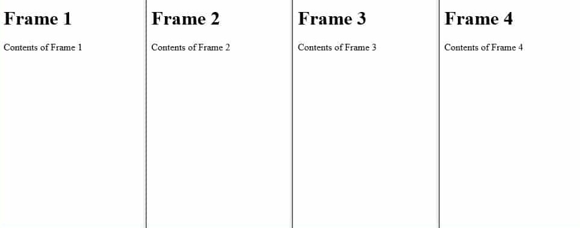
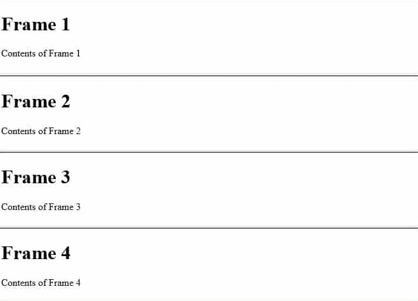
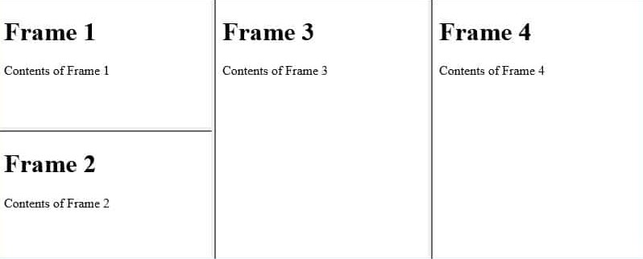

Frames In HTML
HTML frames allow webpage designers to present documents in multiple views, which may be independent windows or subwindows. Multiple views offer designers a way to keep certain information visible, while other views are scrolled or replaced. For example, within the same window, one frame might display a static banner, a second a navigation menu, and a third the main document that can be scrolled through or replaced by navigating in the second frame.
Here is the simple frame layout:
<HTML>
<HEAD>
<TITLE>A simple frameset document</TITLE>
</HEAD>
<FRAMESET cols="20%, 80%">
<FRAMESET rows="100, 200">
<FRAME src="frame1.html">
<FRAME src="frame2.html">
</FRAMESET>
<FRAME src="frame3.html">
</FRAMESET>
</HTML>The frame may look like this:
--------------------------------------- | | | | | | | Frame 1 | | | | | | | | |---------| | | | Frame 3 | | | | | | | | | | | Frame 2 | | | | | | | | | | | | | | ---------------------------------------
<Frameset>
The <frameset> tag defines a frameset. The <frameset> element holds one or more <frame> elements. Each <frame> element can hold a separate document. The <frameset> element specifies how many columns or rows there will be in the frameset, and how much percentage/pixels of space will occupy each of them. It can't be used inside the <body>.
<Frame>
The <frame> defines one particular window (frame) within a frameset.
Attributes Under Frames
| Attribute | Value | Description |
| frameborder | 0,1 | Specifies whether or not to display a border around a frame. |
| marginheight | pixels | Specifies the top and bottom margins of a frame. |
| marginwidth | pixels | Specifies the left and right margins of a frame. |
| name | text | Specifies the name of a frame. |
| noresize | noresize | Specifies that a frame is not resizable. |
| scrolling | yes,no,auto | Specifies whether or not to display scrollbars in a frame. |
| src | URL | Specifies the URL of the document to show in a frame. |
| cols | pixels,%,* | Specifies the number and size of columns in a frameset. |
| rows | pixels,%,* | Specifies the number and size of rows in a frameset. |
Rows and Columns (Attributes of the <Frameset>)
Setting the rows attribute defines the number of horizontal subspaces in a frameset. Setting the cols attribute defines the number of vertical subspaces.
If the rows attribute is not set, each column extends the entire length of the page. If the cols attribute is not set, each row extends the entire width of the page. If neither attribute is set, the frame takes up exactly the size of the page.
Frames are created left-to-right for columns and top-to-bottom for rows. When both attributes are specified, views are created left-to-right in the top row, left-to-right in the second row, etc.
The first example divides the screen vertically in two (i.e., creates a top half and a bottom half).
<FRAMESET rows="50%, 50%"> ...the rest of the definition... </FRAMESET>
The next example creates three columns: the second has a fixed width of 250 pixels (useful, for example, to hold an image with a known size). The first receives 25% of the remaining space and the third 75% of the remaining space.
<FRAMESET cols="1*,250,3*"> ...the rest of the definition... </FRAMESET>
Absolute lengths that do not sum to 100% of the real available space should be adjusted by the user agent. When underspecified, remaining space should be allotted proportionally to each view. When overspecified, each view should be reduced according to its specified proportion of the total space.
How to use <Frameset> and <Frame> to create different types of framesets.
- Creating Vertical Columns:
<html> <frameset cols="*,*,*,*"> <frame src="frame_1.html"> <frame src="frame_2.html"> <frame src="frame_3.html"> <frame src="frame_4.html"> </frameset> </html>
And here's how frameset will look like:

Frames arranged into columns.
- Creating Horizontal Rows:
<html> <frameset rows="*,*,*,*"> <frame src="frame_1.html"> <frame src="frame_2.html"> <frame src="frame_3.html"> <frame src="frame_4.html"> </frameset> </html>
And here's how frameset will look like:

Frames arranged into rows.
- Nesting of frames:
Columns and rows of frames can both appear on the same webpage by nesting one frameset inside of another. To do this, we first create a frameset and then nest a child frameset within the parent element. Here's an example of how we could nest two rows within a set of three columns.
<html> <frameset cols="*,*,*"> <frameset rows="*,*"> <frame src="frame_1.html"> <frame src="frame_2.html"> </frameset> <frame src="frame_3.html"> <frame src="frame_4.html"> </frameset> </html>
Here's the result of the above code:

So the frames are nested.
<NoFrames>
The <noframes> tag specifies fallback content that should be displayed only by the browsers that do not support frames or are configured not to display frames. It can contain all the HTML elements that can be placed inside the <body> element of a normal HTML page.
For Example:<html> <frameset cols="25%,50%,25%"> <frame src="frame_a.html"> <frame src="frame_b.html"> <frame src="frame_c.html"> <noframes> Sorry,your browser does not handle frames! </noframes> </frameset> </html>
If your browser doesn't support the frames or are configured not to display frames,then only the statement i.e."Sorry your browser does not handle frames!" within the <noframes>, in this example will be executed.